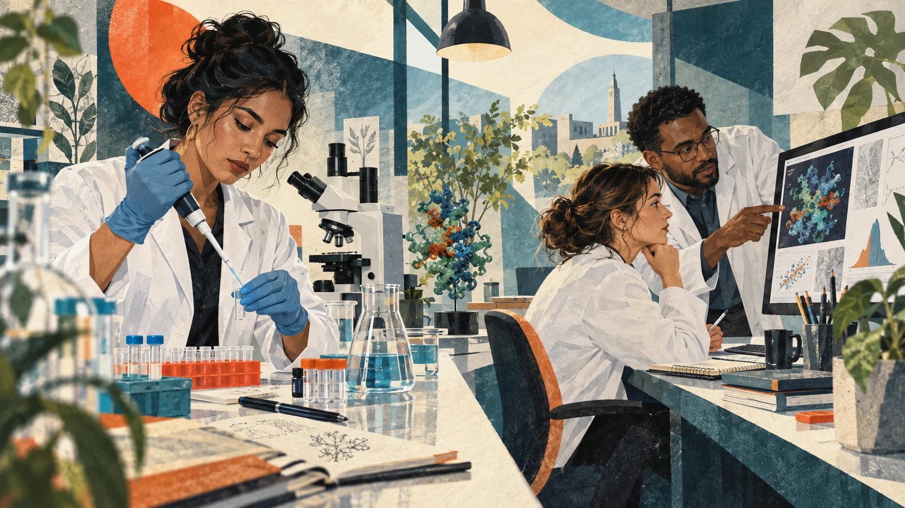
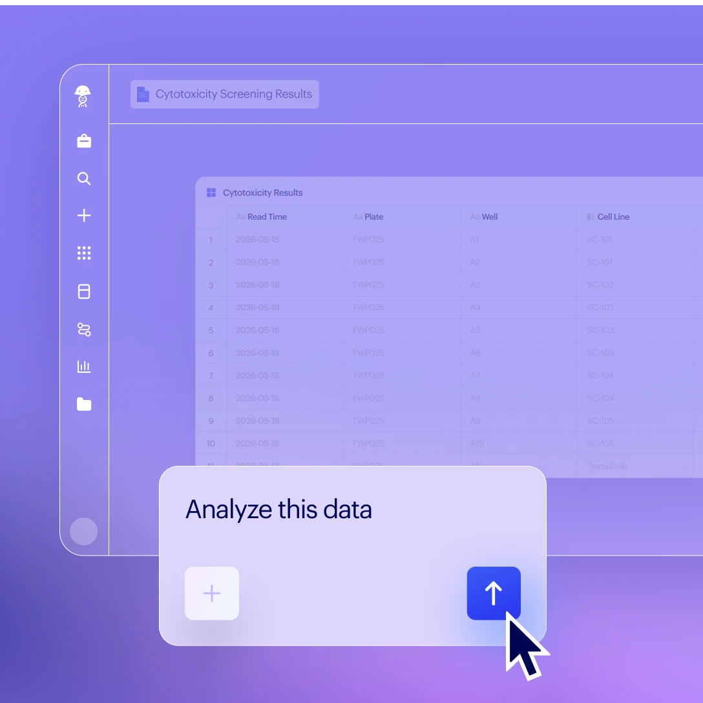
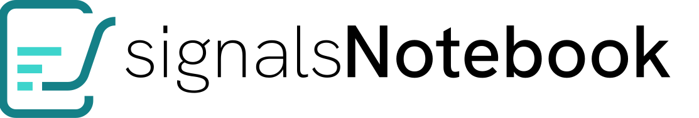
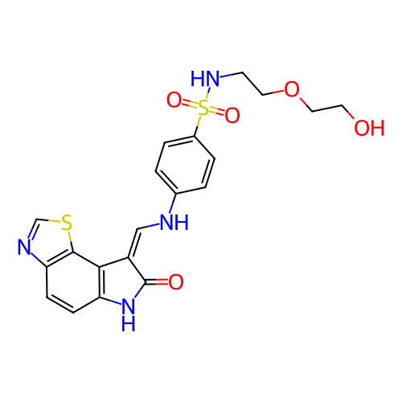
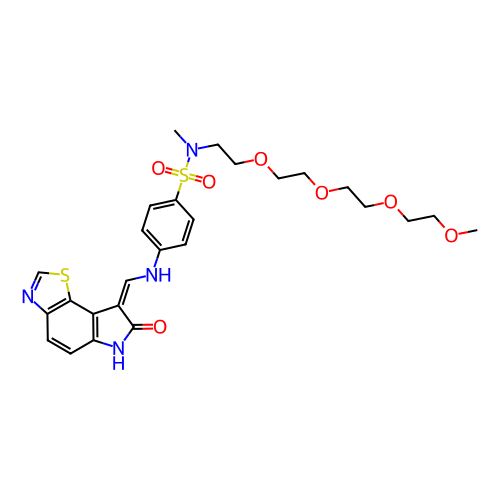
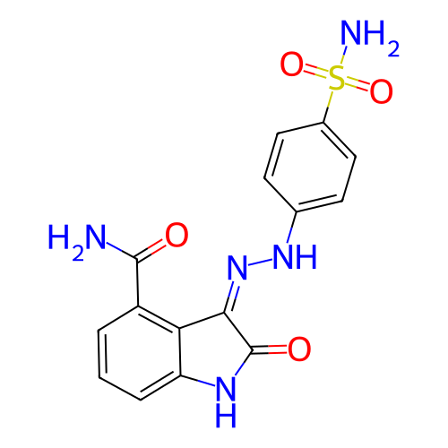

美国 · 产品经理UNITED STATES · PRODUCT MANAGER
Larry
客户调研与部分数据，从他这里进入设计讨论。Customer research and data inform the design discussion through Larry.
01 / Signals AI
Signals AI 帮科学家查实验、筛候选、对照数据。我负责 AI 对话与结果体验，让每次提问都能接上正在做的研究。Signals AI helps scientists find experiments, filter candidates and compare data. I designed the conversations and results that connect each question to their research.
看看这个项目Explore the case ↓Signals AI 能从实验里整理出一份名单。接下来，科学家还要决定查什么、验证什么。我负责从拿到答案到继续研究的这段体验。Signals AI can assemble a shortlist from an experiment. Scientists still need to decide what to inspect and test. My work focuses on the experience between receiving an answer and continuing the research.
他们在实验室做研究，也在电脑前查记录、读结果。我为药企的科学家和研发人员设计，让 Signals AI 接上他们正在做的工作。They run experiments at the bench, then return to a screen to inspect records and results. I design for pharmaceutical scientists and R&D teams, bringing Signals AI into the work already in progress.


美国 · 产品经理UNITED STATES · PRODUCT MANAGER
客户调研与部分数据，从他这里进入设计讨论。Customer research and data inform the design discussion through Larry.
高级产品设计师SENIOR PRODUCT DESIGNER
我负责 AI 入口、筛选，以及对话和结果体验。I design AI entry points, filtering, conversations and results.
上海 · 美国SHANGHAI · UNITED STATES
与研发团队一起完成产品实现。Working with engineering to bring the product to life.
印度 · 质量测试INDIA · QUALITY ASSURANCE
由印度团队负责质量测试。Quality assurance with our team in India.
Insilico 和 Recursion 把 AI 用在候选药物与实验研究上。Benchling、Signals 则把 AI 放进科学家每天使用的软件。我的问题更具体，实验已经在这里，怎样让 AI 帮人接着做下去？Insilico and Recursion apply AI to drug candidates and experimental research. Benchling and Signals bring AI into scientists’ everyday software. My question is more specific. The experiment is already here. How can AI help someone continue the work?
Pharma.AI 帮助寻找研究目标和设计分子，再由实验与人体试验检验。Pharma.AI supports target discovery and molecule design, followed by experiments and human trials.
2025 年发表早期人体试验结果。公司于 2026 年 9 月披露，Rentosertib 已在中国进入三期临床，继续验证安全性与疗效。Early human results were published in 2025. In September 2026, the company reported entry into Phase 3 in China for further testing of safety and efficacy.
看公司进展Read the company update研究者需要比较候选方案，再决定做哪些实验。Scientists need to compare candidates before deciding what to test.
把自动化实验、细胞图像与 AI 分析连起来，研究疾病和潜在药物。Connect automated experiments, cell images and AI analysis to investigate disease and potential medicines.
官网列出的 REC-4881 处于二期临床，即在患者中继续检验安全性与作用。进入临床仍需要后续验证。Its pipeline lists REC-4881 in Phase 2, testing safety and activity in patients. Clinical entry still requires further validation.
看研发进展View the pipeline设计需要连接实验与计算结果，让每轮研究能接着上一轮继续。Design must connect experiments and computational results across successive research cycles.

在实验记录里查历史、分析数据、写报告，也能调用科学模型。Find prior work, analyze data, write reports and run scientific models from the notebook.
2026 年 8 月发布了能执行任务的 AI 助手，可登记分子、创建实验记录、处理结果。其产品同样提供带来源的回答。Agents announced in August 2026 can register molecules, create notebook entries and process results. The product also provides source-linked answers.
看产品发布Read the launch查得到、带引用，已经是这类产品的共同方向。还要考虑如何接上用户的下一步。Search and citations are shared directions in this category. The next question is how they connect to the user’s next action.
AI Explorer 可以围绕实验查找、筛选、分析。Signals One 同时承载实验记录、化学绘图与数据分析。AI Explorer supports search, filtering and analysis around experiments. Signals One also brings together records, chemical drawing and data analysis.
产品官网已展示 AI Explorer；本案例进一步用真实数据检查“提问、筛选、回到记录”这段流程。The product site demonstrates AI Explorer. This case checks the question, filter and return-to-record flow with real data.
看官方产品View the product我的重点是入口、筛选依据和回查路径，让平台已有的能力能在一次任务里用起来。My focus is the entry point, filtering criteria and route back to evidence, making the platform’s capabilities usable in one task.
对已经在 Signals 里工作的团队，AI 可以沿用已有实验，并连接 ChemDraw 绘图和 Spotfire 分析。我的设计重点，是让提问、看结果和回查记录连得上。For teams already working in Signals, AI can draw on existing experiments alongside ChemDraw and Spotfire. My design focus is connecting the question, the result and the route back to the record.
Signals One 产品介绍Signals One overview
实验记录Records团队已有的研究Existing research图像、步骤、材料，都是理解结果的背景。Images, procedures and materials give the results context.
这也是 AI 的回答需要接回实验与分析的原因。That is why an AI answer needs a path back to experiments and analysis.
这也是我想用设计解决的事。
把一句问题，接成一段研究者能继续完成的工作。This is the design problem I want to solve.
Turn a question into work a scientist can carry forward.
2026 年 10 月补充调研，依据公开资料比较各产品的主要任务，不作为性能评测。Supplementary research from October 2026, comparing the main tasks of each product using public sources. This is not a performance benchmark.
94 个分子，哪些满足筛选条件？这次用公开实验走一遍，从提问开始，一直查到原始数据。Which of these 94 molecules meet the criteria? This public-data review follows the task from the first question all the way back to the source.
这次被测试的化合物，还不能叫药。A compound being tested. It is not yet a medicine.
希望影响的对象。这次是名为 CDK2 的蛋白质。The object of the experiment. Here, a protein called CDK2.
抑制一半活性所需的浓度。同一实验条件下，数值越小，所需浓度越低。The concentration needed for half-maximal inhibition. Under the same assay conditions, a lower value means less is needed.
nM（纳摩尔每升）是浓度单位。带“>”的记录只说“大于某个数”，没有准确值，先排除。The unit is nM (nanomoles per litre), a concentration. Values marked “>” give only a lower bound, so we exclude them.
每个点对应一条真实记录。Each dot represents one real record.
Signals AI 完成了这次筛选。对照原始文件，43 条全部一致。Signals AI completed this selection. All 43 matched the original file.
换一个阈值继续问，AI 把 78 条说成了 77 条。比较分子时，又补出了来源没有的实验条件。A follow-up with a different threshold returned 77 instead of 78. A compound comparison then inferred experimental conditions absent from the data.
小于 100 nM 的精确值数量，复核后才改对。The count of exact values below 100 nM was corrected after checking.
答案看起来很完整，
人该从哪里发现问题？When an answer looks complete,
where can a person check it?
图表里有 88 条精确值。小于 100 nM 的三个区间相加是 78，科学家可以顺着图继续核对。The chart includes 88 exact values. The three bins below 100 nM add up to 78, giving the scientist another way to check the answer.
88条精确值进入图表exact values plotted“大于 1000”只告诉我们一个下限。把它当成“等于 1000”，比较就变了。我要让这个区别在结果里留得住。“Greater than 1000” gives only a lower bound. Treating it as “equal to 1000” changes the comparison. That distinction needs to remain visible in the result.



这份实验没有这些数据，不能据此决定哪个分子更适合做药。This experiment contains neither, so these values alone cannot determine which molecule is a better drug candidate.
最初，团队讨论过做一个全新的 AI Agent 工具。我更在意另一件事：客户已经在 Signals One 里积累了研究数据，这才是我们最有价值的基础。Early on, the team discussed building an entirely new AI agent tool. I kept coming back to what customers already had: research data accumulated in Signals One. To me, that was our strongest foundation.
我的建议是，让 Signals AI 围绕已有数据工作。科学家不用换个产品从头开始，设计也从“接上正在做的研究”出发。I argued for Signals AI to work with that existing data. Scientists should be able to continue their research without starting again in a new product. That was the direction I wanted the experience to take.
科学家已经打开了实验，不该再解释一遍“我在看什么”。我把对话留在记录旁边；真正要接上的，是当前实验、应用和可用数据。The experiment is already open. Scientists should not have to explain it again. I keep the conversation beside the record; the AI also needs the current experiment, application and available data.
少一点工作区宽度，保留眼前的实验。Trade some workspace width for the experiment in view.“并且”被理解成“或者”，名单就会变。在这次复核里，我把单位、阈值和比较关系一起留在回答中，让科学家能检查 AI 到底按什么筛选。Read “and” as “or” and the shortlist changes. In this review, I keep the unit, threshold and comparison rule in the answer so scientists can check what the AI actually filtered.
多留一行条件，少一次猜测。One extra line makes the interpretation inspectable.精确值 · nM · 小于 10
43 条匹配，6 条下限记录被排除。Exact values · nM · Below 10
43 matches; 6 lower-bound records excluded.
科学家最终要检查的是数据。引用直接接回实验，详细记录留在原处，对话不用越写越长。Scientists ultimately need to inspect the data. A citation returns to the experiment, keeping the conversation brief and the detailed record intact.
摘要留在对话，细节回到记录。A short answer with access to the full record.从回答里的实验名称，回到 Signals 原始记录。Follow the experiment name in the answer back to its Signals record.
43 条候选，有条件可查，有原始实验可回。细胞中的作用和对其他靶点的影响，仍要补实验。Signals AI 帮人整理到这里，下一步的判断留给科学家。43 candidates, with criteria to inspect and an experiment to return to. Cellular activity and effects on other targets still need further experiments. Signals AI assembles the evidence; the scientist decides what comes next.
2026 年公开数据复核，用于说明当前产品行为。来源为 ChEMBL 的 CDK2 实验，非历史用户研究。Public-data review recorded in 2026 to examine current behavior, separate from historical user research. 查看来源View source IC50 术语来源IC50 reference
比较回答推断了来源没有给出的测试浓度范围，复核后纠正。图表附文把小于 100 nM 的数量算成 77，正确值为 78。完整问答保留在工作档案中。The comparison inferred a concentration range absent from the source. The chart summary also counted 77 values below 100 nM instead of 78. Both were corrected; the full conversation is retained.
材料登记要求数量与纯度，公开数据未提供。因此 94 条数据保存于实验与附件，未登记为实体材料批次。Registration required amount and purity absent from the source. The 94 activities remain in the experiment and attachment; no inventory batches were created.
Revvity 宣布接入 Anthropic 的 MCP 连接器生态。科学家可以在 Claude 里访问 Signals 中的实验和研究信息，继续查询与分析。Revvity announced its integration with Anthropic’s MCP connector ecosystem. Scientists can access experiments and research context from Signals while working in Claude.
Josh Bond 确认了产品管理团队给予我的季度表彰与奖励，并肯定了我在 BioDesign、BioReg 和库存移动端的工作。Josh Bond confirmed a quarterly recognition and reward from product management, highlighting my work on BioDesign, BioReg and the Inventory Mobile app.
“谢谢你的创造力、
灵活应变和出色工作。”“Thank you, Joey, for your creativity,
flexibility, and outstanding work!”